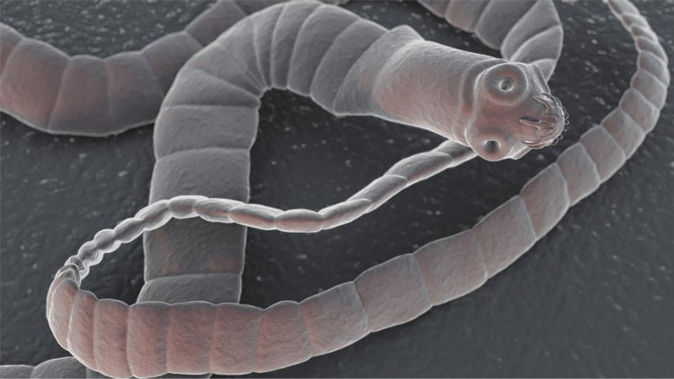
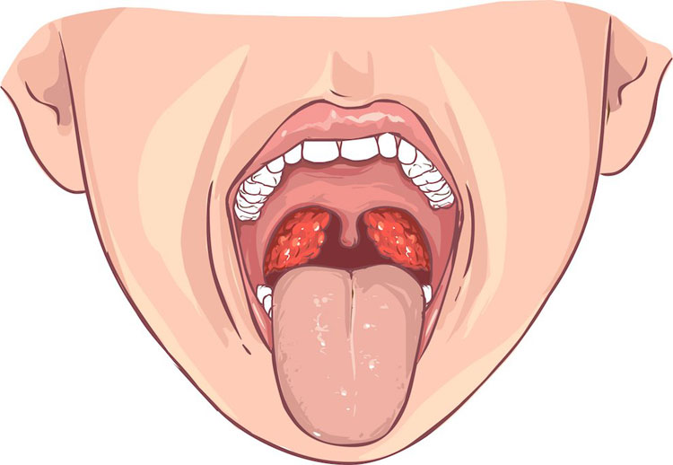
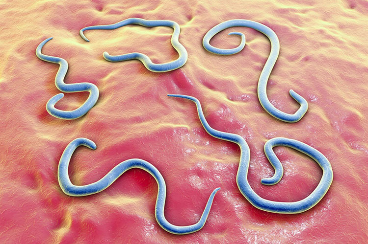
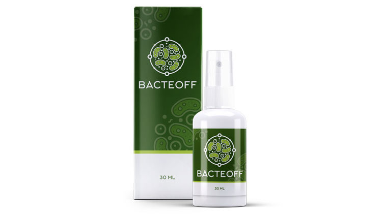

Два месяца назад на нашем портале проводилась акция «Обратись к доктору». Вы могли присылать письма с историей болезни нашим лучшим врачам, получить консультацию и необходимое лечение. Самые интересные истории болезни и выздоровлений с разрешения пациентов мы решили опубликовать на нашем сайте. Вот одна из них:

«Здравствуйте! Меня зовут Сергей, мне 45 лет. Год назад я впервые почувствовал симптомы своей болезни: слабость, высокую температуру и невыносимую боль в горле. Настолько сильную, что невозможно было даже говорить, пить и есть.
Было понятно: это ангина.
Я сразу обратился к врачу. Мой собственный диагноз подтвердился, но добавилась приставка «гнойная». Состояние было настолько тяжелым, что меня положили в больницу.
Лечили меня по стандартной схеме: полоскания и три укола сильнейшего антибиотика в день. В гландах начался абсцесс, потребовалось вскрытие – ужасная процедура, очень болезненная и опасная. По сути, у меня в горле было огромное количество гноя, который приходилось извлекать вручную. Любое неловкое движение хирурга, и могло произойти заражение крови.
Через несколько дней состояние улучшилось, и меня выписали. Но пить и есть я не мог еще в течение недели. Постоянно приходилось промывать горло дезинфицирующими средствами.
Я вернулся к своим повседневным делам, продолжая принимать назначенные препараты и антибиотики. Однако выздоровления не случилось, и я вновь попал в больницу с теми же симптомами.
Врачи провели множество анализов, брали мазки и соскобы, меняли план лечения, но все тщетно. За проведенные три недели в больнице я опробовал на себе несколько видов антибиотиков и потратил уйму денег.

Меня выписали с более-менее стабильным состоянием и диагнозом «хронический тонзиллит».
Не могу сказать, что начал чувствовать себя намного лучше, но ввиду жизненных обстоятельств, пришлось погрузиться в работу и игнорировать свое состояние.
В течение следующих нескольких месяцев меня преследовала боль в горле, неприятный запах изо рта, периодически повышалась температура тела. На шее появились небольшие бугорки – воспаленные лимфоузлы. Если потрогать их пальцами, они напоминают перекатывающиеся шарики. Также добавились головные боли и боли в суставах.
Пришлось снова обращаться к врачам, но ничего нового в плане лечения они не смогли мне предложить. Все те же полоскания и антибиотики, из-за приема которых у меня начались серьезные проблемы с желудочно-кишечным трактом и значительно снизился иммунитет.
Что делать в этой ситуации? Как быть?»
Чтобы помочь Сергею вылечиться, мы отправили его в Национальный медицинский исследовательский центр к лечащему врачу-терапевту высшей категории Ольге Степановой. Ей удалось обнаружить причину заболевания. Вот ее комментарий:
«Из истории болезни Сергея я узнала, что врачи применяли практически все возможные виды антибиотиков, показанные при лечении ангины. Но положительного результата они не дали. И это не удивительно.
Немногие врачи, к сожалению, знают о том, что ангина зачастую имеет паразитарную природу. Поэтому я сразу же отправила Сергея на анализы, и мое предположение подтвердилось: было выявлено заражение гельминтами.
Гельминтоз может спровоцировать огромное количество заболеваний: бронхиальную астму, болезни сердца, печени, поджелудочной железы, желчного пузыря, желудка. Все начинается с острого приступа, лечится неправильно (устраняется не причина, а симптомы) и переходит в хроническую форму. У Сергея все началось с гнойной ангины и переросло в хронический тонзиллит.»

Ольга, какое лечение было назначено Сергею?
«Для лечения гельминтозной ангины я выбрала препарат BacteOFF. Это полностью натуральное средство, быстро и безопасно избавляющее от паразитов всего за один курс применения.
BacteOFF защищает внутренние органы, восстанавливая поврежденные ткани, выводит из организма токсины и яйца глистов. Избавляет от аллергий, хронической усталости, болей в суставах и мышцах.
В его составе – только растительные компоненты, собранные в экологически безопасных районах. BacteOFF не имеет побочных действий и противопоказаний, поэтому для его применения даже не требуется специальное назначение врача.
Своим пациентам я рекомендую использовать этот препарат как средство профилактики. Ведь у многих людей имеются хронические заболевания, которые в 80% случаев вызваны именно паразитами.
Помогло ли лечение? Спустя два месяца, мы спросили самого Сергея:
«Мое состояние значительно улучшилось, ни в какое сравнение с тем, что было это не идёт! Больше никакой температуры, гнилостного запаха изо рта, ломоты в суставах и мышцах, прошла усталость и быстрая утомляемость. Лимфатические узлы рассосались, прошла боль в горле. Плюс ко всему, улучшилось состояние кожи, прошли темные круги под глазами, наладился процесс пищеварения.
Хочу сказать огромное спасибо Ольге и вашему сайту за то, что я смог вернуться к полноценной жизни!»

Купить BacteOFF со скидкой на сайте производителя